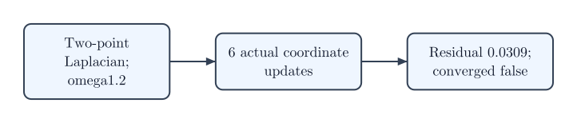
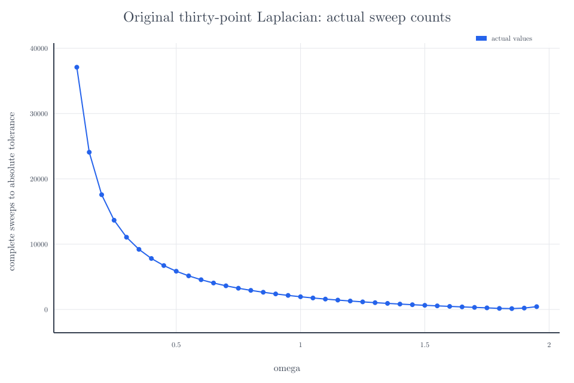
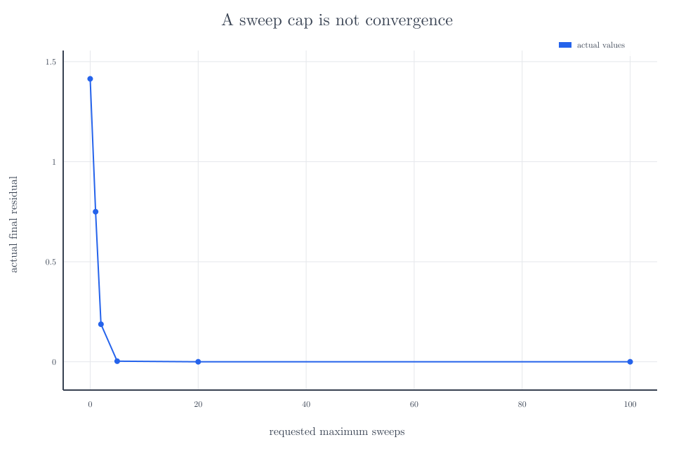
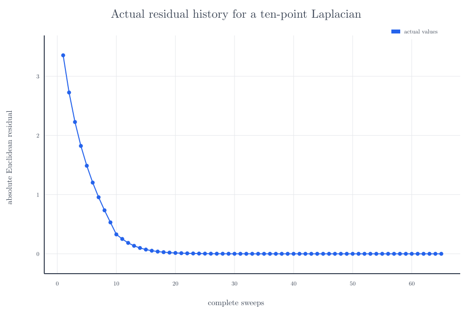

SOR: actual relaxed sweeps and recomputed residuals
Abstract
A sparse-structured linear system may require many Gauss-Seidel sweeps before its residual is small. Successive over-relaxation changes each coordinate update by a factor omega to accelerate suitable systems. We inspect actual iterates, retain the original thirty-point1D Laplacian sweep, and report convergence flags alongside iteration counts.
Mechanism and mathematical scope
For the newest available coordinates, form the Gauss-Seidel candidate and blend it with the old coordinate:
Omega1 is Gauss-Seidel, below1 under-relaxes, and above1 over-relaxes. For symmetric positive definite systems0<omega<2 guarantees convergence; the interval alone does not guarantee convergence for arbitrary matrices. The implementation checks shape, finite entries and nonzero diagonal, but does not test positive definiteness. It recomputes the absolute Euclidean residual after each complete sweep, including a real check at the initial zero iterate.
For the consistently ordered1D Dirichlet Laplacian with diagonal2 and off-diagonal-1, Jacobi spectral radius is cos(pi/(n+1)), giving the asymptotic spectral optimum
A sampled omega with minimum finite-tolerance sweep count need not equal this asymptotic value exactly. Dense implementation work is quadratic per sweep despite the tridiagonal input pattern; reusable matrix-free or specialized solvers are better for very large grids.
A tiny actual producing history
The table and native concept diagram read the same producing execution. Every block below is a complete editable C++ program.
#include <dm/dm.hpp>
int main() {
namespace a = dm::algorithms;
namespace g = dm::graphics;
std::filesystem::create_directories("build");
a::SOROptions o;
o.omega = 1.2;
o.max_iterations = 3;
o.tolerance = 1e-12;
auto r = a::sor_trace({{2, -1}, {-1, 2}}, {1, 1}, o);
std::print("| actual completed sweep | actual iterate | recomputed residual |\n| ---: | --- | ---: |\n");
for (const auto &s : r.sweeps)
std::print("| {} | `{}` | {} |\n", s.iteration, s.x, s.residual);
g::Diagram concept_diagram(48, 1100);
concept_diagram.node("n0", {0, 0}, "Two-point Laplacian; omega1.2");
concept_diagram.node("n1", {5, 0},
std::format("{} actual coordinate updates",
r.coordinate_updates));
concept_diagram.node("n2", {10, 0},
std::format("Residual {:.4f}; converged {}",
r.solution.residual, r.solution.converged));
concept_diagram.edge("n0", "n1").edge("n1", "n2");
concept_diagram.save_svg("build/sor_tiny.svg");
}| actual completed sweep | actual iterate | recomputed residual |
|---|---|---|
| 1 | [0.6, 0.96] | 0.8246211251235321 |
| 2 | [1.056, 1.0416] | 0.07547184905645289 |
| 3 | [1.01376, 0.9999359999999999] | 0.030882901418098758 |

The retained original experiment
#include <dm/dm.hpp>
int main() {
namespace a = dm::algorithms;
namespace g = dm::graphics;
std::filesystem::create_directories("build");
const auto A = a::laplacian_1d_matrix(30);
const std::vector<double> b(30, 1);
const double reference = 2 / (1 + std::sin(std::numbers::pi / 31));
std::vector<double> x, y;
std::print("| original omega | actual sweeps | converged | actual residual |\n| ---: | ---: | --- | " "---: |\n");
for (double w = .1; w <= 1.951; w += .05) {
a::SOROptions o;
o.omega = w;
o.max_iterations = 100000;
o.tolerance = 1e-8;
auto r = a::sor_run(A, b, o);
std::print("| {} | {} | {} | {} |\n", w, r.solution.iterations,
r.solution.converged, r.solution.residual);
x.push_back(w);
y.push_back(r.solution.iterations);
}
std::print("\nAnalytic asymptotic spectral omega reference {}.\n", reference);
auto plot = g::RPlot::create();
plot.lines(x, y, "actual values", {37, 99, 235}).points(x, y, {37, 99, 235},
4).title(
"Original thirty-point Laplacian: actual sweep counts").x_label("omega").y_label("complete sweeps to absolute tolerance");
plot.save_svg("build/sor_original.svg");
}| original omega | actual sweeps | converged | actual residual |
|---|---|---|---|
| 0.1 | 37091 | true | 9.999164651420394e-09 |
| 0.15000000000000002 | 24077 | true | 9.994431536718688e-09 |
| 0.2 | 17570 | true | 9.98873989199579e-09 |
| 0.25 | 13665 | true | 9.993655391315854e-09 |
| 0.3 | 11062 | true | 9.991949535540245e-09 |
| 0.35 | 9203 | true | 9.982945105556782e-09 |
| 0.39999999999999997 | 7808 | true | 9.991479851145908e-09 |
| 0.44999999999999996 | 6723 | true | 9.999311543923443e-09 |
| 0.49999999999999994 | 5856 | true | 9.972059063161457e-09 |
| 0.5499999999999999 | 5146 | true | 9.966038428455773e-09 |
| 0.6 | 4554 | true | 9.972328420698367e-09 |
| 0.65 | 4053 | true | 9.98071670611916e-09 |
| 0.7000000000000001 | 3624 | true | 9.963607972906996e-09 |
| 0.7500000000000001 | 3252 | true | 9.954496921140576e-09 |
| 0.8000000000000002 | 2926 | true | 9.975303953038408e-09 |
| 0.8500000000000002 | 2639 | true | 9.9449123113524e-09 |
| 0.9000000000000002 | 2383 | true | 9.981371174736385e-09 |
| 0.9500000000000003 | 2155 | true | 9.91803689214804e-09 |
| 1.0000000000000002 | 1949 | true | 9.923152196780715e-09 |
| 1.0500000000000003 | 1762 | true | 9.990345255531572e-09 |
| 1.1000000000000003 | 1593 | true | 9.92906380648353e-09 |
| 1.1500000000000004 | 1438 | true | 9.943698783034004e-09 |
| 1.2000000000000004 | 1296 | true | 9.930398481831223e-09 |
| 1.2500000000000004 | 1165 | true | 9.95496713287403e-09 |
| 1.3000000000000005 | 1044 | true | 9.968919153063117e-09 |
| 1.3500000000000005 | 932 | true | 9.938075066479267e-09 |
| 1.4000000000000006 | 828 | true | 9.848414916486633e-09 |
| 1.4500000000000006 | 730 | true | 9.984871284421732e-09 |
| 1.5000000000000007 | 639 | true | 9.889991403823025e-09 |
| 1.5500000000000007 | 553 | true | 9.909638343765042e-09 |
| 1.6000000000000008 | 472 | true | 9.79813196397497e-09 |
| 1.6500000000000008 | 395 | true | 9.57722188541784e-09 |
| 1.7000000000000008 | 320 | true | 9.725869343511376e-09 |
| 1.7500000000000009 | 246 | true | 9.703232543848325e-09 |
| 1.800000000000001 | 165 | true | 9.262599298967514e-09 |
| 1.850000000000001 | 135 | true | 9.818084469093812e-09 |
| 1.900000000000001 | 215 | true | 9.275926958348844e-09 |
| 1.950000000000001 | 432 | true | 9.468069338725603e-09 |
Analytic asymptotic spectral omega reference 1.8162527563363982.

Explicit controls
#include <dm/dm.hpp>
int main() {
namespace a = dm::algorithms;
namespace g = dm::graphics;
std::filesystem::create_directories("build");
std::vector<double> x, y;
std::print("| requested sweep cap | actual sweeps | converged | actual residual |\n| ---: | ---: | --- " "| ---: |\n");
for (int cap : {0, 1, 2, 5, 20, 100}) {
a::SOROptions o;
o.max_iterations = cap;
o.tolerance = 1e-8;
auto r = a::sor_run({{2, -1}, {-1, 2}}, {1, 1}, o);
std::print("| {} | {} | {} | {} |\n", cap, r.solution.iterations,
r.solution.converged, r.solution.residual);
x.push_back(cap);
y.push_back(r.solution.residual);
}
auto plot = g::RPlot::create();
plot.lines(x, y, "actual values", {37, 99, 235}).points(x, y, {37, 99, 235},
4).title(
"A sweep cap is not convergence").x_label("requested maximum sweeps").y_label("actual final residual");
plot.save_svg("build/sor_controls.svg");
}| requested sweep cap | actual sweeps | converged | actual residual |
|---|---|---|---|
| 0 | 0 | false | 1.4142135623730951 |
| 1 | 1 | false | 0.75 |
| 2 | 2 | false | 0.1875 |
| 5 | 5 | false | 0.0029296875 |
| 20 | 15 | true | 2.7939677238464355e-09 |
| 100 | 15 | true | 2.7939677238464355e-09 |

Actual selected work and sensitivity
#include <dm/dm.hpp>
int main() {
namespace a = dm::algorithms;
namespace g = dm::graphics;
std::filesystem::create_directories("build");
a::SOROptions o;
o.omega = 1.5;
o.max_iterations = 200;
o.tolerance = 1e-8;
auto r =
a::sor_trace(a::laplacian_1d_matrix(10), std::vector<double>(10, 1), o);
std::vector<double> x, y;
std::print("| actual sweep | residual |\n| ---: | ---: |\n");
for (const auto &s : r.sweeps) {
std::print("| {} | {} |\n", s.iteration, s.residual);
x.push_back(s.iteration);
y.push_back(s.residual);
}
std::print("\nActual updates {}; off-diagonal visits {}; independently recomputed residual products " "{}.\n",
r.coordinate_updates, r.off_diagonal_visits, r.residual_products);
auto plot = g::RPlot::create();
plot.lines(x, y, "actual values", {37, 99, 235}).points(x, y, {37, 99, 235},
4).title(
"Actual residual history for a ten-point Laplacian").x_label(
"complete sweeps").y_label("absolute Euclidean residual");
plot.save_svg("build/sor_work.svg");
}| actual sweep | residual |
|---|---|
| 1 | 3.3548037009755207 |
| 2 | 2.7260877388782125 |
| 3 | 2.2272490711308737 |
| 4 | 1.823108987847102 |
| 5 | 1.487935300120063 |
| 6 | 1.2033027220712011 |
| 7 | 0.9558034454185114 |
| 8 | 0.734969521342996 |
| 9 | 0.5308482681415385 |
| 10 | 0.3278068462234702 |
| 11 | 0.25096682089032707 |
| 12 | 0.18427043161197934 |
| 13 | 0.1350021176467746 |
| 14 | 0.09861166170975097 |
| 15 | 0.07180801184680483 |
| 16 | 0.05216713858019558 |
| 17 | 0.03786820022671584 |
| 18 | 0.027521950182715662 |
| 19 | 0.020057116811600426 |
| 20 | 0.014644945215850228 |
| 21 | 0.010646747619268013 |
| 22 | 0.007751439419332691 |
| 23 | 0.005642189421831827 |
| 24 | 0.004107070345757797 |
| 25 | 0.0029898964998275068 |
| 26 | 0.002176789161491422 |
| 27 | 0.0015848505000925265 |
| 28 | 0.0011538265990663258 |
| 29 | 0.0008399610001394702 |
| 30 | 0.000611461775659331 |
| 31 | 0.0004451636487899407 |
| 32 | 0.0003240796547903667 |
| 33 | 0.0002359334087187773 |
| 34 | 0.0001717617657249843 |
| 35 | 0.00012504386870219037 |
| 36 | 9.103265009495522e-05 |
| 37 | 6.62722442382004e-05 |
| 38 | 4.8246612576747084e-05 |
| 39 | 3.512390613201714e-05 |
| 40 | 2.557047195259921e-05 |
| 41 | 1.8615464970614458e-05 |
| 42 | 1.3552190790149179e-05 |
| 43 | 9.866086397216606e-06 |
| 44 | 7.182577988826045e-06 |
| 45 | 5.228965996578736e-06 |
| 46 | 3.8067233575582174e-06 |
| 47 | 2.7713209289270074e-06 |
| 48 | 2.0175407087915193e-06 |
| 49 | 1.4687834600057918e-06 |
| 50 | 1.0692844358002262e-06 |
| 51 | 7.78446429926398e-07 |
| 52 | 5.667143457224062e-07 |
| 53 | 4.1257194114376245e-07 |
| 54 | 3.0035520946316064e-07 |
| 55 | 2.1866065653612217e-07 |
| 56 | 1.591864605589829e-07 |
| 57 | 1.1588883739259955e-07 |
| 58 | 8.436787056907944e-08 |
| 59 | 6.142038957582942e-08 |
| 60 | 4.471446500453633e-08 |
| 61 | 3.2552437535115324e-08 |
| 62 | 2.3698397996946227e-08 |
| 63 | 1.725259679167317e-08 |
| 64 | 1.2560009544850677e-08 |
| 65 | 9.143773833022254e-09 |
Actual updates 650; off-diagonal visits 5850; independently recomputed residual products 6600.

API and interpretation
Empty or zero-RHS inputs can converge without a sweep; zero cap still reports the actual initial residual. Finite tolerance is absolute and inclusive. Bounds count actual coefficient visits, including separately recomputed residual products. General non-SPD inputs may fail to converge or produce an explicit arithmetic-range error. No elapsed-time speedup or universal best omega is claimed.
Reusable producers, fixtures and histories live in the canonical C++ library. Captured records own their values and do not come from a separate report replay. Selected counters and record/scalar policies are specified at their API boundaries; they are not peak-byte or wall-time budgets. Synthetic structural inputs are controlled fixtures for these mechanisms.
References
Verified in the shared ten-document batch: 67 scoped native cases and9 formatter
cases;20 directly instrumented ASan/UBSan cases;87 executable public
examples;402/402 full-file definitions across29 scopes;10 hovers;10569
independent records/108541 checks;frozen comparisons across all ten families
with density-rank, long-prefix arithmetic, initial residual and complete-input
corrections recorded;15 checkout/installed standalone headers and linked
ten-family consumer;40 executed programs and40 inspected figures with both
exports. Receipts: build/mepml-conversion/batch-364-373/.